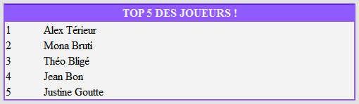
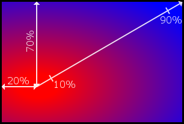

Quel développeur Web ne s'est pas arraché les cheveux sur la conception du design de son site ? Pour peu que l'on ait un minimum de sens artistique, il n'est pas rare de vouloir mettre des bords arrondis aux éléments de notre page, de jouer avec l'opacité ou encore d'ajouter des ombres par-ci, par-là.
Cela se fait le plus souvent à l'aide d'astuces plus ou moins barbares à base d'images et de <div> positionnées anarchiquement.
Aujourd'hui, je vous propose d'oublier ces détournements disgracieux. Que diriez-vous si je vous apprenais que tout cela peut désormais se faire nativement ? Plus besoins d'images lourdes à charger, tout se fait avec de simples propriétés CSS !
N'attendez-plus et découvrez le monde haut en couleur de CSS3 :D .
Parce que ça serait trop beau, il y a évidemment quelques soucis avec CSS3... :(
Loin de moi l'idée de vous démoraliser avant même que nous ayons commencé, mais il est important que vous sachiez dans quoi vous vous engagez en attaquant ce webdesign nouvelle génération. ;)
Déjà, pourquoi parle-ton de CSS3 ? Si vous avez juste suivi le cours de M@teo21, vous ne devez jamais avoir entendu parler d'un quelconque système de versions de CSS !
En fait, il est un peu abusif de parler de "versions", il serait plus correct d'utiliser le terme de "niveaux". En effet, CSS n'est pas un logiciel mais une liste de normes. Les spécifications de CSS1 doivent donc être reprises dans CSS2, qui lui-même est un sous-ensemble de CSS3, qui devra lui aussi pouvoir être implémenté dans le très futuriste CSS4.
Mais qui décide de ces normes ?
Ce sont les membres du W3C : dans la grande majorité des cas, il s'agit d'acteurs incontournables dans le domaine du Web et de l'informatique. On y retrouve par exemple Microsoft, Cisco et même Facebook !
Mais revenons à nos niveaux de CSS, voulez-vous ? :)
Imaginez un peu le bazar si, un jour, les personnes qui écrivent ces normes se rendent compte que ce qu'elles ont établi dans CSS1 est bancal : il faudrait ainsi revoir toutes les bases des spécifications et les navigateurs Web n'auront plus rien de stable sur quoi s'appuyer... Pour éviter un tel scénario, il faut donc être certain que les normes décidées soient correctes et qu'elles ne nuisent pas à la navigation des utilisateurs.
Concrètement, tout ça veut dire que mettre en place les normes d'un nouveau niveau de CSS est un processus extrêmement long. Tellement long que ça va faire plus de 10 ans qu'on attend CSS3 !
Une vitesse d'évolution digne d'un escargot
Pour résumer grossièrement l'histoire, CSS est né en 1996. Grâce à la guerre des navigateurs, qui commençait déjà à cette époque, les normes qu'il imposait furent vite l'objectif à atteindre. En effet, chaque navigateur refusait que ses concurrents puissent s'affirmer comme étant les plus conformes ! :p Mais ce n'est qu'en 2000, soit quatre ans plus tard, que Microsoft réussit le premier à respecter plus de 99% des normes de CSS1 avec Internet Explorer 5. Et oui ! En parallèle, CSS2 a vu le jour en 1998. Malheureusement trop ambitieux avec des idées comme des affichages en braille ou des rendus vocaux, le W3C a dû revoir ses objectifs à la baisse dès 2001 avec un niveau de correction : CSS2.1. De nouveaux sélecteurs, de nouvelles propriétés... En fait, vous connaissez sûrement très bien CSS2.1 car, si vous êtes développeur Web, vous l'utilisez tous les jours !
A force de travail, ce n'est qu'en 2007 que CSS2.1 devient une recommandation candidate. Un peu comme les logiciels qui peuvent avoir une version release candidate, CSS2.1 était devenue stable, prêt à sortir pour de bon, mais pouvant contenir encore quelques bogues. Neuf ans après sa création, on n'avait toujours pas une version 100% stable de CSS2 ! Et tenez-vous bien, ce n'est que le 7 Juin 2011 que le W3C a officialisé ses recommandations : ce n'est que depuis cette date que nous sommes censés utiliser les propriétés CSS2.1 sans risque de bogues ! :waw:
Et CSS3 dans tout ça ?
Le développement de CSS3 s'est fait en parallèle de CSS2.1, dès 1999. Et oui, si tôt ! Selon certaines personnes, il s'agirait d'une erreur de la part du W3C : établir les normes de deux niveaux différents mais complémentaires est loin d'être aisé, il suffit de voir la date de recommandation officielle de CSS2.1 pour s'en rendre compte ! Mais maintenant que ce dernier est enfin finalisé, il ne fait aucun doute que CSS3 sera le prochain objectif du W3C.
Attention cependant, ce n'est pas parce qu'ils sont désormais focalisés dessus qu'il sortira prochainement... Encore une fois, reprenons l'exemple de CSS2.1...
Heureusement pour nous, les navigateurs Web modernes préfèrent prendre le risque d'interpréter les propriétés avant l'officialisation de leurs recommandations : imaginez un peu si nous avions dû attendre plus d'une dizaine d'années avant de pouvoir utiliser CSS2.1 !
Ainsi, même s'ils ne gèrent pas encore le CSS2.1 à 100%, les navigateurs modernes ont un point d'honneur à interpréter le plus de propriétés CSS3 possible : tout comme en 1996, ils ne souhaitent pas que leurs concurrents puissent se dire être les plus conformes. Comme quoi, les années passent mais tout se répète. :p
Bien évidement c'est nous, les utilisateurs, qui sommes bénéficiaires de cette guerre des navigateurs : même si le W3C n'a pas officialisé toutes les propriétés CSS3, nous pouvons d'ores et déjà en tester une grande partie et se rendre compte de leur puissance !
Seulement, comme tout n'est pas normé, il va nous falloir gérer quelques soucis de compatibilité...
Comme nous venons de le voir, toutes les propriétés CSS3 ne sont pas gérées par tous les navigateurs : à vouloir aller plus vite que ceux qui établissent les normes, on se casse parfois un peu les dents ! :-°
Avec le nombre de navigateurs sur le marché, je nous vois mal tester nos pages Web au cas par cas... Heureusement, des gens très patients ont construit des tableaux résumant ce qui est compatible et ce qui ne l'est pas, comme celui visible sur FindMeByIP. Attention cependant, la fiabilité de ce genre de tests n'est pas garantie à 100%, encore une fois parce que rien n'est officiellement normé !
Par exemple, ce n'est pas parce qu'il est marqué que Firefox 3.6 interprète border-radius que la commande border-radius: 10px; fonctionnera ! Pourquoi ? Encore et toujours à cause du W3C !
Ce dernier a en effet bien remarqué que les navigateurs veulent aller plus vite que les normes. Puisqu'on ne peut pas empêcher les navigateurs d'implémenter des propriétés, le W3C leur recommande de préfixer celles qui ne sont pas 100% officialisées.
Préfixer ? Késako ?
C'est une façon de rendre "propriétaire" une propriété. En préfixant le nom d'une propriété par un tiret et un petit code correspondant au navigateur, seul ce dernier sera capable de l'interpréter. Cela permet aux navigateurs qui le souhaitent (c'est-à-dire la plupart :p ) de proposer aux développeurs Web un support des futurs modules CSS.
Voici une liste non exhaustive des préfixes à utiliser :
-moz- pour le moteur Gecko (Mozilla Firefox) ;
-webkit- pour le moteur Webkit (Google Chrome, Safari...) ;
-o- pour Opera ;
-ms- pour Internet Explorer 8+ ;
etc.
Ces préfixes sont donc à placer devant chaque propriété non finalisée. Lorsqu'une propriété est finalisée, le préfixe peut être supprimé, car elle est considérée comme officialisée et donc prête à l'emploi !
Pour en revenir à Firefox 3.6, il est donc nécessaire d'écrire -moz-border-radius: 10px; pour qu'il prenne en compte la propriété. Ce n'est cependant plus vrai à partir de Firefox 4.0 car cette dernière s'est standardisée entre temps !
Je pense que vous commencez à voir le casse-tête que tout ceci peut représenter...
Mine de rien, cette problématique provoque de longs débats dans le monde du développement Web.
Doit-on attendre qu'une propriété soit officialisée avant de commencer à l'utiliser ?
Peut-on commencer à tester les nouvelles fonctionnalités au risque d'avoir du code invalide ?
Est-il préférable de conserver nos vieilles solutions JavaScript pour simuler les effets CSS3 ?
Ce n'est qu'une question de point de vue, et le but de ce tutoriel n'est pas de relancer cet éternel débat. Tout dépend du type de projet réalisé, du public visé, voire de vos clients.
Imaginons que vous voulez ajouter des coins arrondis sur les cadres de votre page et que vous décidez d'adopter la solution CSS3. Cela sera-t-il pénalisant pour vos visiteurs utilisant un vieux navigateur ? Certes, ils verront des coins bien carrés, mais cela va-t-il gêner leur confort de navigation ?
Le fait de ne pas voir les coins arrondis va-t-il complètement changer leur expérience sur votre site ?
Si oui, faut-il laisser tomber l'idée au risque de pénaliser ceux qui ont un navigateur décent ? Ou faut-il adopter une solution en JavaScript, en sacrifiant ainsi l'optimisation ?
Encore une fois, le seul capable de répondre à ces questions est vous-même. C'est selon vos envies, votre humeur, vos besoins, votre philosophie... Enfin bref, je ne déciderai pas pour vous ! :p
Quelle que soit votre décision, je dois continuer le tuto moi ! :p
Compte tenu des particularités liées à ces problèmes de norme, voici comment sera construit le tutoriel.
Tout d'abord, chaque chapitre sera consacré à une nouvelle propriété CSS3, ou à un ensemble de propriétés liées. Ainsi, il ne sera pas nécessaire d'avoir lu le chapitre 3 (traitant des couleurs) pour comprendre le chapitre 5 (qui parlera des arrière-plans). Même si une certaine logique fera qu'ils découleront plus ou moins naturellement les uns à la suite des autres, ils resteront complètement indépendants : vous pouvez les lire dans l'ordre que vous voulez !
Quitte à jouer avec la modernité, sachez que tous les exemples de codes HTML seront écrits en HTML5. Ne vous étonnez donc pas si vous pensez que le code n'est pas valide W3C : il ne le sera en effet pas selon les normes XHTML, mais bien entendu tout sera parfaitement valide HTML5.
Enfin, pour éviter les complications, les navigateurs les plus récents seront utilisés lors des différents exemples et explications. A l'heure où ces lignes sont écrites, il s'agit donc de :
Internet Explorer 9
Google Chrome 20
Mozilla Firefox 14
Opera 12
Safari 5
Si un navigateur de cette liste n'interprète pas la propriété CSS3 ciblée par un chapitre, je vous l'indiquerai, bien évidement. :)
Je suis désolé si ces petites mises au point vous ont semblé rébarbatives, mais elles sont essentielles pour que tout soit clair entre nous. :)
Si vous êtes toujours motivés à en apprendre plus sur la puissance de CSS3, on se retrouve au prochain chapitre, dans lequel on commencera à attaquer la bête sérieusement !
Une des choses essentielles en CSS, c'est bien la sélection des éléments ! Savoir appliquer un style à tous nos paragraphes, à nos titres, aux éléments ayant telle ou telle classe ou encore aux enfants de la balise ayant tel id... Tout ceci fait partie du quotidien de n'importe quel Web Designer.
CSS3 nous propose beaucoup de nouvelles façons de sélectionner nos éléments ; peut-être même en utilisez-vous déjà sans savoir qu'ils ne sont spécifiés que depuis le troisième niveau de CSS ! Quoi qu'il en soit, vous risquez bien vite d'y être accrocs. :)
Vous ne le savez peut-être pas, mais depuis CSS2 il est possible de sélectionner nos éléments selon leurs attributs. Ainsi, il est tout à fait correct de faire ceci :
/* Tous les paragraphes avec un id
spécifié seront écrits en rouge */
p[id]
{
color: red;
}
/* Les zones de saisies
auront un fond bleu */
input[type="text"]
{
background-color: blue;
}
/* Les images dont l'info-bulle est une liste de valeurs
séparées par des espaces et dont l'une d'elle est "jolie"
auront une bordure rouge */
img[title~="jolie"]
{
border: 1px solid red;
}
/* Les vidéos dont l'attribut "data-config" est une liste
de valeurs séparées par des tirets et dont la première valeur
est "big" */
video[data-config|="big"]
{
border: 1px solid red;
}
Sachez qu'il est également possible de faire un méga-mix en combinant plusieurs sélecteurs sur un seul élément !
/* Les zones de saisies ayant la classe "commentaire"
et un id de spécifié, et dont le texte d'indication est une liste de
valeurs séparées par des espaces et dont l'une
d'elles est "ici" auront un fond bleu */
input.commentaire[id][type="text"][placeholder~="ici"]
{
background-color: blue;
}
Ouf ! :p
CSS3 nous propose d'aller plus loin avec une syntaxe qui n'est pas sans rappeler les expressions régulières... En bien moins compliqué, rassurez-vous !
Nous pouvons désormais sélectionner nos éléments selon le début, la fin ou le milieu des valeurs de leurs attributs. Ça reste flou dans votre esprit ? Un exemple s'impose. :)
Imaginons par exemple que nous ayons ce genre de page HTML :
CSS3 nous permet de styliser tous les éléments de notre liste dont l'id commence par total, finit par titre ou encore contient le mot inventaire.
Pour ce faire, la syntaxe à utiliser est la suivante :
E[attr^="A"] : sélectionne les éléments E dont l'attribut attrcommence par A.
E[attr$="A"] : sélectionne les éléments E dont l'attribut attrfinit par A.
E[attr*="A"] : sélectionne les éléments E dont l'attribut attrcontientA.
Ainsi, pour en revenir à notre exemple, nous pouvons styliser notre liste de la sorte :
/* La liste globale, rien de nouveau pour l'instant */
ul
{
width: 300px;
margin: auto;
border: 2px solid #000;
padding: 0px;
list-style: none;
}
/* Les objets de la liste, toujours rien de nouveau ! */
li
{
padding-left: 5px;
}
/* Les éléments de la liste dont l'id FINIT par "titre" */
li[id$="titre"]
{
padding: 3px;
padding-left: 30px;
background-color: #af5151;
color: #fff;
font-weight: bold;
}
/* Les éléments de la liste dont l'id COMMENCE par "total" */
li[id^=total]
{
background-color: #e5cfcf;
}
/* Les éléments de la liste dont l'id CONTIENT "stats" */
li[id*=stats]
{
font-size: 20px;
}
/* Les éléments de la liste dont l'id CONTIENT "inventaire" */
li[id*=inventaire]
{
text-align: center;
font-size: 15px;
padding-left: 0px;
}
Bien entendu, il est possible de filtrer sur n'importe quel attribut, pas seulement l'id.
Cette nouvelle technique est donc très pratique, mais attention à ne pas la surexploiter : l'utilisation des classes est parfois plus adaptée à la situation. ;)
Il peut nous arriver de vouloir styliser nos éléments selon leur position dans le DOM : n'avez-vous jamais essayé de mettre en gras tous vos paragraphes sauf le premier de la page ? Ou, plus probablement, de colorer alternativement les lignes d'un tableau ?
Différents moyens nous sont alors offerts, que ce soit du 100% CSS en utilisant des classes ou en jonglant avec JavaScript.
CSS3 nous facilite la vie en nous permettant de sélectionner les éléments directement selon leur position ! Concrètement, cela se traduit par l'utilisation de pseudo-formats, et ces derniers vont devenir vos meilleurs amis. :D
L'élément racine
Nous allons passer très rapidement sur ce sélecteur car, comme vous allez vous en rendre compte, il ne nous sera pas super utile.
CSS3 introduit en effet le pseudo-format :root. Il permet de sélectionner l'élément correspondant seulement s'il est la racine de notre document. Petit rappel au cas où : la racine est le tout premier élément d'un document, celui qui englobe tous les autres. En clair et concis, :root sélectionne notre balise <html>. :p
Pourquoi s'en servir alors ? On peut sélectionner cette balise en écrivant html, tout simplement !
Peut-être pensez-vous, à tort, que le CSS ne s'applique que sur des documents (x)HTML. Eh bien non ! Ce merveilleux langage peut styliser n'importe quel type de documents XML !
Un XML peut contenir n'importe quel type de balise : sa racine peut être n'importe quoi, pas forcément <html> ! Le pseudo-format :root sera donc bien plus utile pour les XML. :)
Sélectionner le nième élément
Sélectionner les premiers éléments enfants.
Imaginons que nous ayons réalisé un jeu Web et que nous souhaitons afficher le top 5 des meilleurs joueurs. Nous pourrions ainsi avoir un fichier de ce style :
Pour commencer, stylisons-le de façon très basique avec le code CSS ci-dessous. Il n'y a rien de nouveau pour le moment, vous ne devriez avoir aucun mal à le comprendre. :)
Ceci produira le (relativement) joli tableau qui suit :

Nous voulons maintenant mettre en évidence les trois meilleurs du top 5 : nous pouvons par exemple augmenter la taille d'écriture de leur nom. Pour cela, nous n'utiliserons aucune classe mais plutôt le pseudo-format :nth-child(n), où n est la position de notre élément à sélectionner.
/* La première ligne du corps de notre tableau */
tbody tr:nth-child(1)
{
font-size: 24px;
font-weight: bold;
}
/* Puis sa seconde ligne */
tbody tr:nth-child(2)
{
font-size: 20px;
font-weight: bold;
}
/* Et enfin sa troisième */
tbody tr:nth-child(3)
{
font-size: 18px;
font-weight: bold;
}
:nth-child(n) permet de sélectionner le nième élément enfant en partant du début. Mais comment faire pour les sélectionner à partir de la fin ? Tout simplement avec :nth-last-child(n) !
Celui-ci fonctionne exactement de la même façon que son frère, passons donc directement à l'exemple en ajoutant ceci à notre code. :)
/* La dernière ligne du corps de notre tableau */
tbody tr:nth-last-child(1)
{
font-size: 10px;
font-style: italic;
}
/* Puis l'avant-dernière ligne */
tbody tr:nth-last-child(2)
{
font-size: 14px;
font-style: italic;
}
Une chose que devez comprendre est que les pseudos-formats que nous venons de voir doivent se lire ainsi :
Styliser l'élément correspondant uniquement s'il est le nième enfant de son élément parent.
Vous ne voyez pas ou je veux en venir ? Prenons par exemple ce document :
<!DOCTYPE html>
<html>
<head>
<title>Un petit test...</title>
<meta charset="UTF-8" />
</head>
<body>
<p>Coucou, je suis le premier paragraphe !</p>
<p>Et je suis le second paragraphe !</p>
<ul>
<li>Et moi,</li>
<li>je suis</li>
<li>une liste !</li>
</ul>
<p>Et je suis un troisième paragraphe, dingue !</p>
<p>Je suis un quatrième paragraphe !</p>
</body>
</html>
Admettons que nous souhaitons styliser uniquement le troisième paragraphe. Nous pensons donc à écrire ceci :
Parce que notre troisième paragraphe n'est pas le troisième enfant de son parent (qui est la balise <body>), il est placé en quatrième position !
Bien sûr, il est possible de tricher et d'utiliser :nth-child(4), voire :nth-last-child(2) (notre troisième paragraphe est bien l'avant-dernier enfant !), mais CSS3 nous propose une autre solution pour résoudre ce petit soucis.
Cette solution prend la forme du pseudo-format :nth-of-type(n) : celui-ci agit de la même façon que son cousin :nth-child(n), excepté qu'il prend en compte le type des éléments !
/* Sélectionne le troisième paragraphe */
p:nth-of-type(3)
{
background-color: #f3f3f3;
}
La différence entre :nth-child(n) et :nth-of-type(n) est assez subtile, n'hésitez pas à faire plusieurs tests pour bien la comprendre. :)
Toujours plus fort, toujours plus loin !
Tous les pseudo-formats que nous venons de voir sont très puissants, mais ils ne nous ont pas encore tout révélé !
Jusque-là, nous les avons utilisés avant des valeurs numériques : :nth-child(2), :nth-of-type(3) etc... Et bien sachez qu'il est possible de spécifier une formule mathématique à la place d'un simple nombre !
Pour ceux à qui les maths donnent des boutons, rassurez-vous : cette formule est très simple puisqu'elle est sous la forme : xn+a
Où n est une constante utilisée par le navigateur, x un multiplicateur et a un indice de décalage. Et si vous ne vous rappelez pas de ça, ce n'est pas grave. :p
Souvenez-vous juste que nous devons renseigner les valeurs de x et de a !
Alors, que se passe-t-il ici ? Tout d'abord, le navigateur prend la valeur de a, qui est ici 1, et stylise l'élément correspondant : notre premier paragraphe a donc fond de couleur claire.
Ensuite, le navigateur prend la valeur de x, ici 2 : il comprend ainsi qu'il doit styliser le deuxième paragraphe qui suit celui qu'il vient de styliser, puis encore le deuxième, et encore le deuxième, et ainsi de suite.
a vaut ici 2 : le navigateur va donc commencer par styliser le second paragraphe. x vaut 3, il prendra donc le troisième paragraphe suivant pour le styliser, et encore le troisième, etc.
Essayez de visualiser le résultat dans votre tête avant d'essayer ce code. ;)
Rien de tel qu'un petit exemple pour vous montrer à quel point le prochain sélecteur que nous verrons s'avère pratique.
Mettons-nous en situation : nous avons un formulaire et nous souhaitons mettre une bordure rouge de trois pixels autour de tous les <input>, excepté ceux destinés à accueillir un mot de passe qui doivent avoir une bordure normale. Voici donc comment nous pourrions procéder :
Pour information, sachez qu'il est possible de combiner les :not(). Si nous voulons appliquer une bordure sur tous les <input> sauf ceux des mots de passe et des URL, nous pouvons donc écrire ceci :
/* Tous les inputs, sauf ceux des mots de passe et des URL */
input:not([type="password"]):not([type="url"])
{
border: 3px solid red;
}
Pour terminer ce chapitre en douceur, voici trois autres sélecteurs dont vous vous servirez probablement moins, mais il est toujours utile de les connaître. :)
:checked
Comme vous l'avez sûrement deviné, ce pseudo-format s'applique sur les <input> de type checkbox ou radio.
Il permet de les sélectionner uniquement si elles sont cochées.
Bon, sur le papier c'est alléchant, mais en pratique ça l'est un peu moins : les navigateurs ne nous permettent pas de styliser les cases à cocher comme on le souhaite ! On peut cependant se servir de cette fonctionnalité pour modifier le style des éléments situés près d'une case à cocher :
/* Les labels situés juste après une case à cocher */
input[type="checkbox"] + label
{
color: red;
}
/* Les labels situés juste après une case cochée */
input[type="checkbox"]:checked + label
{
color: green;
}
Le pseudo-format :empty sélectionne un élément n'ayant aucun enfant : aucune autre balise, aucun texte, rien du tout ! Il faut que notre élément soit complètement vide.
/* Les paragraphes vides */
p:empty
{
height: 20px;
width: 100px;
background-color: #c00;
border: 2px solid #f00;
}
Malheureusement, :empty ne peut pas être utilisé pour sélectionner les zones de formulaires vides... Mais je suis sûr que vous lui trouverez une utilité. :)
:target
Le dernier mais pas le moindre, :target nous permet de sélectionner les éléments qui sont ciblés. Pour qu'un élément soit considéré comme ciblé, il doit posséder un id dont la valeur est égale à celle de l'ancre de la page.
<!-- Ce code provient du cours de M@teo21 -->
<h1>Ma grande page</h1>
<p>
Aller directement à la partie traitant de :<br />
<a href="#cuisine">La cuisine</a><br />
<a href="#rollers">Les rollers</a><br />
<a href="#arc">Le tir à l'arc</a><br />
</p>
Ici, selon le lien cliqué, l'élément dont l'id est cuisine sera ciblé, ou celui dont l'id est rollers ou encore celui dont l'id est arc.
Dans son exemple, M@teo21 a utilisé des titres comme cibles de ces liens. Il est donc possible de les sélectionner via CSS3 de cette façon :
/* On applique un fond beige pâle sur les titres ciblés */
h2:target
{
background-color: #fdfae2;
}
Comme vous le voyez, :target peut nous être très pratique selon les situations. Ce sélecteur nous permet des choses qui nous étaient impossibles à réaliser avant sans l'aide de JavaScript : nous pouvons par exemple penser à un système de texte secret !
<h1><ins>Question :</ins> quel sélecteur cet exemple illustre-t-il ?</h1>
<fieldset>
<legend>
<a href="#secret">Voir la réponse</a>
<a href="#">Cacher la réponse</a>
</legend>
<p id="secret">
Le sélecteur <b>:target</b> : il est possible grâce
à lui de faire ce type d'interface sans aucune ligne de JavaScript !
</p>
</fieldset>
/* On cache les paragraphes */
p{display: none;}
/* Et on affiche ceux qui sont ciblés */
p:target
{
display: block;
}
Des interactions avec le visiteur en utilisant uniquement du CSS : n'est-ce pas merveilleux ? :D
CSS3 apporte donc son lot de nouveaux sélecteurs. Très puissants, ils se révèlent très pratiques et permettent de styliser nos pages de manière bien plus efficace qu'avant.
Les plus délicats à comprendre sont sans doute ceux de la famille de :nth-child(n) mais, une fois maîtrisés, on se sent tout-puissant. :soleil:
Comme son nom l'indique, le modèle RGB définit une couleur selon trois composantes : le total de rouge, le total de vert et le total de bleu.
Chaque valeur est comprise entre 0 et 255 inclus : à 0 la composante associée est absente de la couleur finale, à 255 elle est présente à son maximum. Ainsi, la couleur rgb(0,0,0) ne possède pas de rouge, ni de vert, ni de bleu : cela donne du noir. En revanche, rgb(255,255,255) possède chacune des trois composantes au maximum : nous avons alors du blanc.
Les normes CSS3 ajoutent une quatrième composante aux trois que nous venons de voir : la composante Alpha. Celle-ci définit le taux d'opacité de la couleur : à 0 elle est transparente, à 1 elle est totalement opaque.
Pour utiliser cette nouvelle composante fort intéressante, il faut appeler non plus rgb() mais rgba() (ce n'est pas compliqué, il y a juste un a (de Alpha)en plus ! :p).
Aller, un petit exemple histoire de tester ! Nous allons colorer ces trois <div> :
/* Toutes les div */
div
{
border: 2px solid #000;
width: 200px;
height: 200px;
position: absolute;
}
/* Première div, en rouge
(et tant qu'à faire, on révise
le chapitre précédent :p ) */
div:nth-of-type(1)
{
background-color: rgba(255,0,0,0.7);
left: 130px;
top: 20px;
}
/* Seconde div en vert */
div:nth-of-type(2)
{
background-color: rgba(0,255,0,0.7);
left: 80px;
top: 120px;
}
/* Troisième div en bleu */
div:nth-of-type(3)
{
background-color: rgba(0,0,255,0.7);
left: 240px;
top: 100px;
}
Le modèle RGB est donc très puissant, mais malheureusement peu intuitif... Imaginons par exemple que vous regardiez le code CSS d'une autre personne et que vous voyez ceci :
html
{
background-color: rgb(75,139,185);
}
Si vous avez bien suivi la partie précédente, vous savez que cette couleur possède 75/255 de rouge, 139/255 de vert et 185/255 de bleu. Vous vous attendez donc à voir afficher une couleur plutôt bleue, allant vers le vert.
Et vous auriez raison, car voici ce que ça donne :
. Bon, notre œil ne voit pas tellement ce que cette couleur a de vert, mais admettons ! Prenons maintenant le cas où vous souhaitez rendre ce bleu plus "pétant" : qu'il soit un peu plus "flashy", moins fade !
Comment allez-vous vous débrouiller ? Enlever du rouge ? Enlever du vert ? Ajouter du bleu ? Et de combien devrez-vous faire varier les valeurs de ces composantes ?
A moins de connaître par cœur les 16 millions et quelques de mélanges RGB, il est impossible de faire ça intuitivement !
C'est donc là qu'entre en scène le modèle HSL. Tout comme le RGB, HSL se base sur trois valeurs. Mais celles-ci ne définissent plus une quantité de couleur, mais un niveau de teinte, un taux de saturation et un taux de luminosité.
Dit comme ça, je dois avouer que c'est encore moins intuitif que RGB. :p Alors tâchons d'expliquer clairement ces trois nouvelles valeurs :
La teinte définit en quelque sorte la base de notre future couleur : c'est elle qui définit si notre couleur sera rougeâtre, bleutée ou encore dans les tons verts. En CSS, la teinte varie de 0 à 360, selon le schéma ci-dessous :
La saturation est un pourcentage représentant l'intensité de la future couleur. Plus cette valeur est proche de 100, plus la future couleur sera vive. Au contraire, plus la saturation s'approche de 0 et plus elle paraîtra fade et grisâtre.
La saturation du rouge
La luminosité est la plus simple à comprendre : plus cette valeur est élevée, plus la couleur paraîtra lumineuse (plus elle s'approchera du blanc). A contrario, plus cette valeur s'approche de 0 et plus la couleur en résultant paraîtra sombre (et donc plus elle s'approchera du noir). Il s'agit là encore d'un pourcentage.
La luminosité du rouge
Maintenant que tout est clair dans votre esprit, il serait bon de pouvoir se servir de tout ceci en CSS, n'est-ce pas ?
Les normes CSS3 nous proposent d'utiliser ce modèle en appelant tout simplement hsl().
Pour avoir du rouge pur, nous écrirons donc : hsl(360,100%,50%); Besoin d'une explication ? Comme nous venons tout juste de le voir, la première valeur est la teinte. D'après le cercle chromatique qu'on a vu plus haut, le rouge correspond à la valeur 360 (ou 0). La seconde valeur est la saturation : puisque nous voulons un rouge pur, on le veut le plus vif possible, on indique donc un pourcentage maximum ! Enfin, nous voulons une luminosité moyenne : si elle est trop basse on s'approche trop du noir mais, si elle est trop élevée, nous sommes trop près du blanc... L'idéal est donc d'être à mi-chemin !
Bon, revenons-en à notre problème de départ. Nous avions ce bleu :
, définit par rgb(75,139,185);, et nous souhaitions le rendre un peu plus "flashy".
Tel quel, on a vu que c'était pas évident du tout, alors imaginons que le développeur qui nous a précédé ait écrit cette couleur au format HSL :
html
{
/* Cette couleur est l'équivalent HSL de rgb(75,139,185)
On ne peut pas vraiment le deviner ! */
background-color: hsl(205,44%,51%);
}
Et là, c'est le bonheur ! Si vous avez bien suivi jusque-là, vous devriez savoir quelle valeur modifier pour rendre notre bleu plus intense !
Aller, je vous donne un indice : il ne s'agit ni de la teinte, ni de la luminosité. :-°
html
{
/* On veut rendre notre couleur plus
flashy : on augmente la SATURATION ! */
background-color: hsl(205,74%,51%);
}
Nous passons donc de cette couleur de base
à celle-ci
et notre problème est résolu en deux coups de cuillères à soupe ! Pour information, le modèle RGB correspondant est rgb(38,145,223); : il aurait été bien difficile de le trouver à partir de rgb(75,139,185); !
Nous avons vu que CSS3 nous permet de définir un niveau de transparence à nos couleurs à l'aide de rgba(); ou hsla();.
Il est possible d'aller encore plus loin en définissant l'opacité de tout un élément HTML !
Quelle est exactement la différence... ?
Depuis tout à l'heure, nous appliquons une transparence sur des couleurs. Ces couleurs peuvent ensuite être utilisées pour des propriétés telles que color, background-color, border-color etc.
Définir l'opacité d'un élément HTML concerne tout l'élément : que ce soit son image de fond, ses bordures ou encore son contenu (du texte ou d'autres éléments HTML !).
Pour que vous compreniez bien, voici le code HTML sur lequel on basera notre exemple :
<!DOCTYPE html>
<html>
<head>
<title>Opacité</title>
<meta charset="UTF-8" />
</head>
<body>
<h1>Ce texte est lisible malgré les DIV présentes sur lui.</h1>
<div>
Parent
<div>Enfant</div>
</div>
</body>
</html>
Notre code CSS placera notre <div> parente au-dessus du texte. En lui appliquant une opacité, nous nous rendrons compte que sa <div> enfant sera également affectée !
Ah oui, avant que je n'oublie : la propriété CSS pour modifier le niveau de transparence d'un élément s'appelle tout simplement opacity. :) Celle-ci prend une valeur comprise entre 0 (complètement transparent) et 1 (totalement opaque).
/* Toutes les div */
div
{
border: 2px solid #000;
position: absolute;
top: 20px;
text-align: center;
}
/* div parente en blanc */
div:nth-child(2)
{
background-color: hsl(0,0%,100%);
width: 200px;
height: 200px;
line-height: 200px;
left: 130px;
opacity: 0.5;
}
/* div enfant en bleu */
div:nth-child(2) div
{
background-color: hsl(270,100%,50%);
width: 50%;
height: 50%;
line-height: 100px;
left: 175px;
}
opacity a donc rendu notre <div> parente à moitié transparente (ou à moitié opaque, selon votre niveau d'optimisme :p ). Comme toute propriété CSS, elle a été héritée par tous les enfants de l'élément sur lequel elle est appliquée.
Ainsi s'achève ce chapitre haut en couleur. :D
La possibilité que nous offre CSS3 de jouer avec l'opacité est un grand atout : nul doute que les graphistes seront ravis d'une telle initiative !
Retenez bien ces nouvelles façons d'utiliser les couleurs, car nous les réutiliserons dès le chapitre suivant pour donner un peu de gaieté à des... ombres. :-°
Ha, les ombres. Quel vaste sujet dans le domaine du webdesign !
Elles apportent un plus non négligeable et un certain cachet à nos pages : si elles sont bien utilisées, appliquer des ombres ajoute un effet de profondeur et un aspect professionnel.
Le plus souvent, les ombres sont affichées à l'aide d'images, ce qui demande donc au navigateur du visiteur de charger des ressources supplémentaires. Le défi étant par la suite de placer correctement ces images afin de ne pas rater cet effet d'ombrage...
Avec CSS3, ce temps est désormais révolu ! La nouvelle norme nous permet l'utilisation de propriétés permettant de créer des ombres automatiquement.
Aller, faisons toute la lumière sur les ombres ! (Oui, elle était facile celle-là :-° )
La propriété qui fait tout le travail à notre place s'appelle box-shadow. Pour l'utiliser, il est nécessaire de lui fournir cinq valeurs :
Le décalage de l'ombre sur l'axe des abscisses.
Le décalage de l'ombre sur l'axe des ordonnées.
Le rayon de flou.
La distance de l'ombre par rapport à l'élément (pour donner l'impression que ce dernier est plus ou moins éloigné de notre page).
La couleur de l'ombre.
Un petit schéma pour détailler ces valeurs : :)
La propriété box-shadow est donc très simple à utiliser. Faites juste attention à bien séparer chaque valeur par un espace !
Notez également que les valeurs définissant le rayon de flou et la distance de l'ombre sont facultatives : il est tout à fait possible de ne pas les renseigner du tout !
div
{
/* Peu importe le reste du code */
box-shadow: -25px -20px grey;
}
Le dernier paramètre de la propriété est une couleur. Jusque-là, on a utilisé grey mais, bien entendu, on peut utiliser n'importe quelle définition de couleur ! Un petit rappel du chapitre précédent, ça vous dit ? :D
div
{
/* On peut utiliser n'importe quelle définition
de couleur, y compris celles jouant avec l'opacité ! */
box-shadow: 20px 10px 10px 0 hsla(180,80%,40%,0.8);
}
Essayez de vous représenter le résultat de ce code avant de l'essayer. ;)
Les possibilités de box-shadow sont déjà assez énormes, mais que diriez-vous si je vous apprenais qu'on peut lui préciser un autre paramètre ?
Ajouter le mot-clef inset juste après la définition de la couleur permet en effet de faire de l'ombre une ombre interne. Dans le cas d'une ombre interne, le comportement des deux premiers paramètres change un peu :
Le premier paramètre indique alors la largeur de l'ombre du côté vertical. Si cette valeur est positive, elle sera collée contre le côté gauche de notre élément. Si elle est négative, elle sera contre le côté droit.
Le second paramètre indique la hauteur de l'ombre du côté horizontal. Si cette valeur est positive, l'ombre sera collée contre le côté du haut de l'élément. Sinon, elle sera contre le côté du bas.
div
{
/* Une ombre interne présente sur les côtés
gauches et bas de l'élément */
box-shadow: 20px -20px 15px 0 hsla(0,0%,0%,0.5) inset;
}
Enfin, dernier point important, il est possible de spécifier plusieurs ombres pour un même élément. Pour cela, il nous suffit de répéter les valeurs de la propriété autant de fois que l'on veut d'ombres, en séparant chaque définition par une virgule :
div
{
/* On ajoute deux ombres de même couleur
pour entourer tout l'intérieur de l'élément */
box-shadow: 15px 15px 10px 0 #e3e3e3 inset,
-15px -15px 10px 0 #e3e3e3 inset;
}
box-shadow est donc une propriété bien pratique, mais elle possède malgré tout une grosse limitation : elle ne s'applique que sur les éléments en eux-mêmes, pas sur le texte !
Bon, ce n'est pas bien grave en soi, on peut s'en passer mais... Super CSS3 est arrivé et nous propose une solution pour ombrer nos textes ! :soleil:
Cette solution se nomme très originalement text-shadow et nous pose notre premier réel problème de compatibilité : en effet, Internet Explorer 9 ne l'interprète pas. Il faudra donc s'en passer pour le navigateur de Microsoft !
Excepté ce détail ennuyeux, text-shadow est très pratique car utilisable pratiquement de la même manière que box-shadow. Elle demande quatre valeurs :
Le décalage de l'ombre sur l'axe des abscisses.
Le décalage de l'ombre sur l'axe des ordonnées.
Le rayon de flou.
La couleur de l'ombre.
Ça ne doit pas trop vous dépayser, n'est-ce pas ? :)
Aller, un petit exemple quand même :
div
{
/* Peu importe le
reste du code CSS */
text-shadow: 8px 8px 2px grey;
}
Toutes les règles vues avec box-shadow s'appliquent également avec text-shadow : il est ainsi possible de spécifier n'importe quel type de couleur pour les ombres. Nous pouvons également définir plusieurs ombres en même temps.
Tout ceci nous permet de réaliser quelques effets (plus ou moins) sympathiques : laissez tomber vos Photoshop ou autres Gimp, CSS3 est dans la place ! :soleil:
Une petite aura
En appliquant une ombre sans la décaler, on peut créer une aura autour du texte. De plus, en répétant plusieurs fois la même définition d'une ombre, on renforce son halo. Voici ce qu'on peut donc faire :
Le fait de pouvoir appliquer plusieurs ombres sur un même texte nous offre des possibilités incroyables. On peut par exemple envisager de définir 3 à 4 ombres orangées de plus en plus floues et de plus en plus sombres... Simulant ainsi du feu !
On l'a vu, les ombres permettent de donner un effet de profondeur. Cela sera d'autant plus vrai avec cette autre petite astuce !
Celle-ci consiste à écrire le texte dans une couleur légèrement plus sombre que celle du fond. En appliquant sur ce texte deux ombres très légèrement décalées nous donnons l'impression qu'il s'incruste dans la page :
Ces différents petits effets ne sont que des exemples de ce que nous permet cette formidable propriété qu'est text-shadow. Mais sachez que, en pratique, on préférera faire des choses bien plus sobres que toutes ces fantaisies.
Savoir le faire est une chose, mais n'en mettez par partout sur votre site au risque de le rendre illisible. ;)
Comme on l'a dit, Internet Explorer 9 interprète parfaitement box-shadow mais, curieusement, ne gère pas du tout text-shadow.
Une solution 100% CSS existe pourtant bel et bien pour ombrer nos textes sur ce navigateur : utiliser une propriété propre à Microsoft !
Ce dernier a en effet développé toute une série de filtres afin d'appliquer différents effets sur nos éléments rien qu'en CSS. Parmi ces filtres se trouve un dédié aux ombres : c'est donc lui que nous utiliserons pour ombrer nos textes sur Internet Explorer.
Celui-ci est (légèrement) plus compliqué à utiliser que text-shadow : il faut utiliser la propriété CSS filter et lui appliquer une valeur (très) spécifique :
div
{
filter: progid:DXImageTransform.Microsoft.Shadow(color='COULEUR', Direction=DIRECTION, Strength=PUISSANCE);
}
Ce n'est pas beaucoup plus complexe que text-shadow... Si ? :euh:
Bon, n'ayons pas peur de cette petite ligne et remarquons que trois paramètres n'attendent que d'être renseignés :
COULEUR : La couleur de notre ombre. Ici, seule la notation hexadécimale est acceptée, ou le nom de la couleur en anglais. Cependant, préférez utiliser l'hexadécimal, tous les noms de couleurs CSS n'étant pas interprétés par le filtre...
DIRECTION : Un nombre parmi les suivants :
Nombre
L'ombre se situera...
0
en haut
45
en haut à droite
90
à droite
135
en bas à droite
180
en bas
225
en bas à gauche
270
à gauche
315
en haut à gauche
PUISSANCE : Derrière ce nom pompeux se cache en fait le rayon de flou de l'ombre. N'indiquez pas une valeur trop élevée ou vous risquez d'avoir un résultat plutôt... spécial.
Voici donc un exemple d'utilisation :
div
{
/* Pour tous les navigateurs */
text-shadow: 8px 8px 2px grey;
/* Pour IE */
filter: progid:DXImageTransform.Microsoft.Shadow(color='#333333', Direction=135, Strength=5);
}
Si vous avez essayé ce code avec Internet Explorer, vous avez pu constater que le résultat n'est pas folichon, mais malheureusement c'est le mieux que l'on puisse faire pour le moment si on ne veut utiliser que du CSS... :( Gageons que la dixième version du navigateur de Microsoft interprétera text-shadow !
CSS3 et les ombres commencent donc une belle histoire, et nous en sommes les témoins privilégiés !
Appliquer des ombres à nos pages Web n'a jamais été aussi facile, et nul doute que les prochains sites les utiliseront à la place d'images lourdes à charger.
Cela dit, attention de ne pas tomber dans l'excès : un site contenant des ombres à tout va risque d'être plus désagréable qu'autre chose ! Comme tout, il faut user et ne pas abuser.
La raison d'être d'une ombre est d'être discrète, et non envahissante. Souvenez-vous-en. ;)
La gestion des arrière-plans est primordiale lors de la conception du design d'un site Web : il faut avouer qu'un fond tout blanc n'est pas ce qu'on fait de plus beau !
Même si le CSS nous permettait de manipuler nos images de fond avec des propriétés telles que background-repeat ou background-position, force est de constater que nous étions tout de même assez limités...
CSS3 change la donne de ce côté également et nous apporte un lot de nouvelles propriétés qui n'attendent que vous pour être utilisées. :)
Placer précisément nos arrières-plans se fait la plupart du temps à l'aide de la propriété background-position.
Par défaut, cette propriété place notre fond depuis le coin supérieur gauche de l'élément HTML : il est désormais possible de modifier ce comportement.
Ceci se fait à l'aide de la propriété background-origin qui accepte trois valeurs différentes :
padding-box
border-box
content-box
padding-box : la valeur par défaut
Selon les normes, la propriété background-origin a comme valeur par défaut padding-box.
Cette valeur signifie que le coin supérieur gauche de notre image de fond sera positionné au coin supérieur gauche de notre élément HTML, bordures non incluses.
Un petit exemple vous aidera à mieux comprendre le principe. :)
div
{
/* On fixe les dimensions de notre <div> */
width: 159px;
height: 280px;
/* On lui définit une marge interne */
padding: 10px;
/* On lui met des bordures en petits tirets */
border: 10px dashed #000;
/* Un fond rouge pour mieux voir */
background-color: red;
/* On indique une image de fond (notre cher Zozor !) */
background-image: url('zozor.jpg');
/* On ne veut pas répéter cette image */
background-repeat: no-repeat;
/* Et enfin, notre nouvelle propriété. */
background-origin: padding-box;
}
Le résultat étant le suivant :
Comme vous le constatez, c'est ce que nous avions déjà l'habitude d'avoir avec CSS2.1 : une image dont l'origine se trouve dans le coin supérieur gauche tout en n'étant pas sous les bordures.
border-box : la prise en compte des bordures
Si vous avez bien suivi jusque-là et que vous êtes plutôt du genre perspicace, vous avez sûrement deviné ce que fait cette nouvelle valeur. Je vous le donne dans le mille : elle signifie que le coin supérieur gauche de notre image de fond sera positionné au coin supérieur gauche de notre élément HTML, bordures incluses.
Si nous utilisons le même code que précédemment en modifiant juste background-origin avec cette valeur, voilà ce que ça nous donne :
content-box : par rapport au contenu
Pour cette troisième est dernière valeur, vous pouvez oublier les bordures : cette fois, concentrons-nous sur le contenu de l'élément HTML !
Enfin, pour être précis, nous allons nous baser sur son padding, sa marge interne.
Notre exemple comporte un padding de 10px, ce qui nous donne le résultat suivant :
Si notre élément possède un padding-top de 20px et un padding-left de 30px, le résultat serait alors le suivant :
Je dois avouer que, du coup, les noms des valeurs de background-origin sont un peu mal choisis... Mais il faut faire avec ! :p
Si vous avez testé l'exemple ci-dessus, peut-être avez-vous été surpris de voir que notre <div> est plus petite lorsque le padding vaut 0 : si c'est le cas, rappelez-vous que la marge interne fait partie intégrante de la hauteur d'un élément HTML de type block, au même niveau que la propriété height.
Dans notre exemple de base, le padding vaut 10px : puisque nous le réduisons par la suite, il est normal que notre <div> soit plus petite. ;)
Très proche dans le principe de background-origin, CSS3 nous propose également la propriété background-clip.
Première bonne nouvelle pour vous, les valeurs que peut avoir cette propriété sont exactement les mêmes que background-origin : à savoir padding-box, border-box et content-box.
La mauvaise nouvelle, c'est que même si ces valeurs ont le même nom, elles ne font pas tout à fait la même chose ! :o
Mais avant de les voir en détail, il serait bon de comprendre à quoi sert background-clip. Nous avons vu tout à l'heure que nous pouvons distinguer trois "zones" dans un élément HTML : tout l'élément en lui-même, l'élément sans ses bordures et enfin son contenu.
background-clip permet de limiter l'affichage du fond de l'élément selon ces trois zones. C'est encore flou dans votre tête ? Pas de panique, les exemples qui suivent devraient vous éclairer. :)
border-box : la valeur par défaut
Premier changement, et pas le moindre, de background-clip par rapport à background-origin : la valeur par défaut est maintenant border-box !
Cette valeur indique au navigateur qu'il doit afficher l'arrière-plan sur tout l'élément, bordures comprises.
Si on reprend notre exemple précédent, voici donc ce que ça donne :
div
{
/* On fixe les dimensions de notre <div> */
width: 159px;
height: 280px;
/* On lui définit une marge interne */
padding: 10px;
/* On lui met des bordures en petits tirets */
border: 10px dashed #000;
/* Un fond rouge pour mieux voir */
background-color: red;
/* On indique une image de fond (notre cher Zozor !) */
background-image: url('zozor.jpg');
/* On ne veut pas répéter cette image */
background-repeat: no-repeat;
/* Et enfin, notre clip ! */
background-clip: border-box;
}
padding-box : excluons les bordures
Avec cette valeur, background-clip empêchera le navigateur d'afficher l'arrière-plan sous les bordures. Notez que TOUT l'arrière-plan est alors invisible, que ce soit les images de fond ou les couleurs de fond !
content-box : par rapport au contenu
Je ne vais pas vous ré-expliquer comment fonctionne content-box puisqu'il s'utilise de la même façon qu'avec background-origin.
La seule différence, comme pour les autres valeurs de cette propriété, est qu'il permet "d'effacer" l'arrière-plan, et non de déplacer son origine.
Pour que ce soit plus clair, voici quelques comparaisons entre background-origin: content-box; et background-clip: content-box; :
Vous pouvez également cliquer sur le lien ci-dessous pour tester directement depuis votre navigateur les différentes valeurs de background-clip :
Si tout ceci reste encore assez flou pour vous, je vous conseille de tout tester par vous-même. Je vous propose également un petit défi : essayez de prévoir le bon affichage en utilisant en même tempsbackground-origin et background-clip. Si vous réussissez, vous êtes un vrai champion ! :D
Avoir des images de fond, c'est bien. Les adapter à la taille de leur conteneur, c'est mieux ! :D
Il est assez surprenant de constater que, avec CSS2.1, il n'est pas possible de modifier la taille de nos images de fond. Qui n'a jamais souhaité réaliser ce genre de chose ?
Une des techniques possibles consiste alors à placer une balise <img> en position: absolute; et à modifier ses dimensions. Mais bouh, que c'est sale. >_
Notre grand ami CSS3 aime la propreté et nous propose une solution toute simple : la propriété background-size !
Notre première approche de background-size
Celle propriété prend deux valeurs séparées par un espace, en pixels ou en pourcentage. La première valeur correspond alors à la largeur de l'image et la seconde à sa hauteur.
Un petit exemple avec une image de notre cher Zozor qui fait, à l'origine, 80px*80px :
div
{
/* On définit des dimensions plus grandes que notre image,
pour que vous voyez bien le principe */
width: 200px;
height: 200px;
/* On ajoute une petite bordure */
border: 3px solid #000;
/* On met en place notre arrière-plan
(j'espère que vous vous rappelez du modèle HSL !) */
background-color: hsl(100,80%,40%);
background-image: url('zozor.png');
background-repeat: no-repeat;
/* On modifie la taille de l'image de fond */
background-size: 90px 140px;
}
Si nous ne précisons qu'une seule valeur, la seconde sera alors comprise comme étant auto. Mais qu'est-ce donc ? auto signifie que la dimension correspondante (largeur ou hauteur) sera automatiquement calculée par le navigateur afin que l'image garde ses proportions d'origine.
div
{
/* [...] */
background-size: auto 111px;
}
Vous voyez ? Nous n'avons précisé que la hauteur de l'image et, grâce au mot-clé auto défini pour la largeur, le navigateur l'a automatiquement calculée afin que l'image garde ses proportions ! Ce qui, entre nous, n'a pas dû être trop difficile puisque notre image est un carré... :-°
Utilisation des pourcentages
Comme je vous l'ai dit, background-size accepte également des pourcentages en tant que valeurs.
Et là, faites bien attention, car il y a une grosse subtilité !
On serait tenté de croire que les pourcentages se calculent selon les dimensions de l'image. Et on se tromperait ! Ceux-ci se calculent selon les dimensions de la zone d'affichage de l'arrière-plan.
Notez le gras et le soulignement de la phrase précédente, ce n'est pas anodin : les dimensions de la zone d'affichage de l'arrière-plan sont différentes de celles de l'élément HTML correspondant !
Je ne comprends pas tellement pourquoi... On affiche pourtant notre fond dans tout notre élément, non ?
Eh bien non, pas forcément, et c'est là que réside toute la subtilité.
Rappelez-vous ce qu'on a fait au début de ce chapitre : on s'est amusé à modifier l'origine de nos images de fond avec background-origin. Avec nos bêtises, on a modifié la zone d'affichage des arrière-plans ! :p
Le tableau ci-dessous devrait vous permettre de voir (et je l'espère de comprendre !) ce comportement qui peut paraître anarchique aux premiers abords :
demande au fond de s'étendre jusque sous les bordures. La zone d'affichage des fonds est donc un peu plus grande que la ligne ci-dessus. Les Zozor sont donc un peu plus gros (si si, regardez bien !).
A cause de padding: 30px; et de background-origin: content-box;, la zone d'affichage des arrière-plans est considérablement réduite. Les Zozor sont donc affichés en plus petit !
Les deux dernières valeurs possibles
Car ce n'est pas tout !
En plus de longueurs en pixels ou en pourcentages et de auto, background-size peut en effet accepter une autre valeur parmi les deux suivantes :
contain
cover
Ces deux valeurs permettent d'adapter notre image automatiquement à la zone d'affichage des fonds.
contain demande au navigateur de modifier les dimensions de l'image de sorte qu'elle soit la plus grande possible et entièrement contenue dans sa zone d'affichage. cover, quant à elle, permet à l'image d'être la plus petite possible tout en couvrant totalement sa zone d'affichage.
Bien entendu, les proportions sont automatiquement conservées.
Après toutes ces nouvelles propriétés pas forcément évidentes à appréhender, je vous propose de souffler un peu avec background-image.
Oui, je sais, vous connaissez déjà cette propriété : elle permet d'indiquer le chemin de l'image à afficher en fond. On l'a déjà utilisée plusieurs fois dans ce chapitre.
Mais, depuis CSS3, cette propriété accepte plusieurs fonds ! Il est ainsi possible d'appliquer plusieurs arrière-plans sur un même élément HTML et ça, c'est tout nouveau et très pratique ! :D
La première image indiquée sera celle qui sera affichée au-dessus des autres. En toute logique, la dernière sera alors celle affichée sous toutes les autres. Un exemple ?
div
{
/* Les dimensions de la <div> */
width: 179px;
height: 300px;
/* Une petite bordure */
border: 3px solid #000;
/* On ne veut pas que les fonds se répètent */
background-repeat: no-repeat;
/* Et on définit DEUX fonds ! */
background-image: url('zozor.png'),url('zozor.jpg');
/* Je rappelle que, dans nos exemples, "zozor.png" est notre
petit Zozor, tandis que "zozor.jpg" est le grand. */
}
Si nous souhaitons configurer un peu mieux nos arrière-plans, il suffit d'utiliser les propriétés CSS habituelles en séparant chaque valeur par une virgule.
Ainsi, si nous souhaitons répéter horizontalement le petit fond et ne pas répéter le grand fond, nous nous y prendrons de cette manière :
div
{
/* [...] */
background-image: url('zozor.png'),url('zozor.jpg');
background-repeat: repeat-x, no-repeat;
/* La première valeur est appliquée à la première image définie,
la seconde valeur est appliquée à la seconde image définie, etc. */
}
Nous pouvons également utiliser les propriétés que nous avons vues dans ce chapitre. Essayons un méga-mix ! :soleil:
div
{
/* On fixe les dimensions, comme d'habitude !*/
width: 139px;
height: 260px;
/* Une marge interne pour que ce soit plus rigolo */
padding: 20px;
/* Une bordure noire et un fond rouge, pour mieux voir */
border: 3px dashed #000;
background-color: red;
/* Définition de nos deux images de fond */
background-image: url('zozor.png'),url('zozor.jpg');
/* Les deux images ont leur origine en haut à
gauche de l'élément, bordure comprise*/
background-origin: border-box;
/* On ne répète que la première, horizontalement */
background-repeat: repeat-x, no-repeat;
/* Le petit Zozor n'est affiché que dans la zone de contenu,
tandis que le grand est affiché dans tout l'élément */
background-clip: content-box, border-box;
/* Le petit Zozor fait environ le tiers de sa zone d'affichage,
alors qu'on conserve les dimensions du grand Zozor */
background-size: 33%, auto;
}
Le résultat de tout ce joyeux bazar est affiché dans la zone secrète ci-dessous. Avant de le regarder, je vous conseille vivement d'essayer de prévoir ce que ça peut donner : c'est en se torturant l'esprit que l'on apprend ! ;)
Alors, vous y étiez presque ?
Si non, rassurez-vous : vous ne devriez pas être le seul ! Cet exemple, particulièrement tordu, vous permet de voir que nous pouvons combiner tout ce qu'on a vu dans ce chapitre. Le résultat ci-dessus n'est pas franchement très beau, mais je suis certain que vous saurez utiliser ces propriétés afin d'obtenir des rendus intéressants !
Gérer nos arrière-plans est devenu bien plus complet avec l'arrivée de CSS3. Les propriétés que nous avons vues vont vous permettre de faire des choses impossibles à réaliser auparavant, à moins d'utiliser des astuces qui salissaient votre code.
Si vous n'avez pas compris toutes les subtilités de ce chapitre, je vous invite à faire une pause et à y revenir plus tard à tête reposée : vous verrez que ce n'est au final pas si difficile que ça dès que la logique a été saisie. :)
Mais on me signale à l'oreillette que nous n'en avons pas encore fini avec les arrière-plans... Qui a parlé de dégradés ? :-°
Nous venons tout juste de voir comment manipuler nos arrière-plans de façon un peu plus complète que nous voici déjà face à une autre problématique : quid des dégradés ?
Faire un dégradé sur son site, ça se résume souvent à réaliser une image avec notre éditeur graphique favori et à l'afficher en tant que fond, tout en la répétant horizontalement ou verticalement.
CSS3 va nous permettre de faire de cette technique une astuce non optimisée. Eh oui, car grâce à CSS3, les navigateurs peuvent générer eux-mêmes nos dégradés !
La première chose que vous devez savoir pour réaliser un dégradé en CSS : il faut utiliser la propriété background-image. Oui, encore elle !
Ce n'est pas forcément logique, je vous le concède, mais c'est ainsi, il faut faire avec.
Seconde chose à savoir, bien plus ennuyeuse : les navigateurs modernes ont besoin de leur préfixe pour interpréter les dégradés. Ce qui signifie que vous pouvez dire adieu à la validité de votre code selon W3C. :( Cela est fort dommage, car ils interprètent tous les dégradés correctement !
Tous ? Non ! Car un certain Internet Explorer résiste encore et toujours à l'appel du progrès. Et la vie n'est pas facile pour nous autres pauvres développeurs...
Il est malgré tout intéressant de regarder comment réaliser ces dégradés. Commençons tout d'abord par observer la syntaxe d'un dégradé linéaire :
Comme vous le voyez, la fonction linear-gradient prend en paramètre une liste de couleurs : peu importe le nombre, le navigateur générera un dégradé contenant toutes ces couleurs, dans l'ordre où elles ont été définies. Un petit exemple ?
Et voilà comment générer un (relativement) magnifique arc-en-ciel. :D Comme vous pouvez le constater, le dégradé se dirige, par défaut, vers le bas de notre élément. Il est possible de modifier ce comportement en indiquant une direction en premier paramètre. Cette direction est une valeur en degrés. Ainsi, pour définir un dégradé allant vers la droite, il nous faut préciser un angle de 0deg (n'oubliez pas le deg !) :
Vous pouvez bien entendu spécifier la valeur d'angle que vous le souhaitez, et je vous invite grandement à faire vos petites expériences. Ceci vous permettra de bien maîtriser cette propriété CSS, et surtout de constater que la valeur par défaut de la direction est de 270deg (ce qui, au passage, ne correspond pas aux recommandations du W3C :waw: ).
Si vous avez visité le lien ci-dessus, vous avez pu constater qu'il existe une façon bien plus intuitive d'indiquer une direction : utiliser des mots-clés. Pour notre dernier exemple, il suffirait donc d'utiliser la valeur to right pour que notre dégradé aille vers la droite ! :)
Il existe bien entendu un mot-clé pour chaque direction (to left, to bottom etc.) et il est également possible de les combiner pour viser les coins : to top left, to bottom right etc.
Avant de passer aux dégradés circulaires, il me semble important de préciser deux derniers points à propos des couleurs :
Le premier, très important, est que vous pouvez préciser une couleur selon n'importe quelle notation CSS : que ce soit leur nom anglais comme on vient de le voir, la notation hexadécimale, la notation RGB(A) ou encore la notation HSL(A) (hé bien oui, vous savez l'utiliser maintenant ! :D ).
Le second point est que vous pouvez également préciser une valeur en pourcentage juste après une couleur. Ce pourcentage indiquera alors où doit se trouver la zone "pure" de cette couleur.
Et là, je suis sûr que vous êtes à peu près comme ça devant votre écran : o_O
Je l'admets, ce n'est pas très clair, est un exemple sera probablement plus explicite !
background-image: linear-gradient(yellow 0%, red 100%);
Rien de bien extraordinaire, me direz-vous, mais essayons de comprendre ce qui s'est passé !
Tout d'abord, nous n'avons pas spécifié de direction : notre dégradé commence donc depuis le haut et se dirige vers le bas.
Le premier paramètre vaut yellow 0%. Il indique que la première couleur du dégradé doit être jaune (mais ça, vous l'aviez deviné tout seul, je suppose ! :-° ). Le 0% signifie que ce jaune doit être le plus pur possible (c'est-à-dire jaune de chez jaune !) à 0% du dégradé. Pour bien comprendre cette drôle d'expression qu'est "à 0% du dégradé", il faut voir le dégradé comme un chemin parcouru par notre couleur : 0% représente alors le point de départ et 100% l'arrivée.
yellow 0% signifie donc : "Au début de ton chemin, la couleur doit être d'un jaune pur". Le troisième paramètre, red 100%, indique par conséquent : "Une fois arrivé à la fin de ton chemin, la couleur doit être d'un rouge pur".
Bien entendu, comme nous voulons générer un dégradé, le navigateur s'occupe tout seul de la variance des teintes entre ces deux étapes. :D
Un autre exemple pour être sûr que vous ayez bien compris :
linear-gradient(45deg, blue 10%, black 50%, green 90%);
Notre dégradé est bien composé de bleu, de noir et de vert, et il part dans une direction de 45 degrés, c'est-à-dire vers le coin supérieur droit.
Le bleu est pur à 10% du "chemin", le noir à 50% et le vert à 90%. Ne vous fatiguez pas à vérifier, je l'ai fait pour vous. :)
Maintenant que vous maîtrisez comme des chefs les dégradés linéaires (enfin, je l'espère du moins :-° ), voyons un autre type de dégradés : les dégradés circulaires.
Ceux-ci se font non plus avec la valeur linear-gradient(), mais avec radial-gradient().
On constate que la première couleur définie se trouvera au centre du dégradé : plus une couleur est définie tardivement, plus elle sera éloignée du centre !
Nous pouvons également remarquer que, dans le cas d'élément rectangulaire comme notre exemple, le dégradé circulaire "s'étale" et ne forme pas un cercle parfait, mais une ellipse. radial-gradient accepte en effet en premier paramètre une valeur (qui peut être soit ellipse, soit circle) afin de définir la forme du dégradé. Vous l'aurez deviné, la valeur par défaut de ce paramètre est donc ellipse. :p Changeons donc tout ceci en précisant circle :
Le GROS point qui fâche : aller plus loin avec les dégradés circulaires
Tout ceci est bien joli, mais quoiqu'un peu limité malgré tout : nous ne pouvons même pas déplacer le centre de nos dégradés !
C'est maintenant que nous allons découvrir la joie de travailler avec des spécifications en cours de développement : il faut savoir que la syntaxe des dégradés, que ce soient les linéaires ou les circulaires, a grandement évolué ces dernières années. Si ce n'est pas trop important pour les dégradés linéaires, il en est tout autrement pour les circulaires : en effet, la syntaxe actuelle n'a pratiquement plus rien à voir avec l'ancienne !
Résultat ? AUCUN des navigateurs actuels ne gère complètement cette nouvelle syntaxe et, si nous souhaitons respecter parfaitement les normes, nous sommes limités à ce que nous venons de voir... :(
Cependant, afin de ne pas vous laisser trop dans l'ignorance, je me permets de laisser ci-dessous l'ancienne version de ce chapitre. Il traite de l'ancienne syntaxe de radial-gradient, vous risquez donc d'être un petit peu dépaysé.
Voici donc l'ancienne syntaxe de radial-gradient() :
centre indique le centre de notre cercle. Il s'agit en général de deux pourcentages séparés par un espace. Ainsi 50% 50% indiquera le centre de notre élément HTML. Il est possible d'utiliser également des mots-clés tels que top ou left, mais le résultat peut être différent selon le paramètre comportement... Je vous conseille donc d'utiliser les pourcentages. ;)
forme peut être soit ellipse, soit circle. Si vous souhaitez avoir un cercle parfait, vous utiliserez cette dernière valeur, ce qui est assez logique en soi !
comportement peut prendre 4 valeurs différentes ! Nous y reviendrons dans quelques instants.
Les couleurs, enfin, se gèrent comme pour linear-gradient() : il nous suffit d'indiquer une couleur à appliquer et le pourcentage du "chemin" où cette couleur doit être 100% pure. Attention toutefois, nous sommes maintenant dans un cercle : le chemin complet correspond au rayon du cercle, tandis que son départ est représenté par son centre !
Jusque-là, seul le paramètre comportement devrait vous donner du souci : regardons-le donc en détail.
Comme son nom l'indique, il permet de définir le comportement de notre dégradé : celui-ci doit-il être étiré jusqu'aux bords de l'élément ? Ou jusqu'à ses côtés ?
Par conséquent, comportement définit également la longueur du rayon du cercle.
Voici les valeurs qu'il peut prendre :
cover
contain
closest-corner
farthest-side
cover : un dégradé couvrant tout l'élément
Nous avons déjà vu ce mot-clé dans le chapitre précédent avec background-size. Son effet est ici similaire : avec cette valeur, notre dégradé sera le plus grand possible et couvrira tout notre élément HTML. Pour vulgariser, cela signifie à peu près que la dernière couleur du dégradé se verra le moins possible.
radial-gradient(20% 70%, ellipse/circle cover, red 10%, blue 90%)
ellipse
circle

J'espère que vous avez compris cette histoire de pourcentages, car c'était assez long de les représenter sur ces schémas. :D
contain : un dégradé entièrement contenu dans l'élément
Un autre revenant de background-size ! Avec cette valeur, notre dégradé sera le plus grand possible tout en étant entièrement visiblement dans l'élément HTML. A l'inverse de cover, cela signifie à peu près que la dernière couleur du dégradé se verra le plus possible.
radial-gradient(20% 70%, ellipse/circle contain, red 40%, blue 90%)
ellipse
circle
closest-corner : va au coin !
Cette valeur demande au dégradé de s'étendre jusqu'au coin le plus proche du centre du cercle.
radial-gradient(20% 70%, ellipse/circle closest-corner, red 40%, blue 90%)
ellipse
circle
Comme vous pouvez le voir dans cet exemple ci-dessus, le coin le plus proche du centre est l'inférieur gauche, et notre dégradé s'est bien étendu jusqu'à lui. :)
farthest-side : mettons le dégradé de côté
Avec cette valeur, le dégradé s'étendra jusqu'au côté de l'élément HTML le plus éloigné par rapport au centre du cercle.
radial-gradient(20% 70%, ellipse/circle farthest-side, red 40%, blue 90%)
ellipse
circle
Un petit mot pour conclure sur les dégradés circulaires
Vous allez dire que je radote mais, encore une fois, même si cette ancienne syntaxe fonctionne sur la plupart des navigateurs récents vous ne devez pas l'utiliser. Cela dit, la connaître peut vous être utile, car la nouvelle syntaxe s'en approche beaucoup : voici, par exemple, ce qu'il faudra écrire pour générer le dernier dégradé du tableau précédent :
radial-gradient(farthest-side at 20% 70%, red 40%, blue 90%);
Cependant, ce tutoriel n'insiste pas trop sur cette syntaxe car, encore une fois, aucun des navigateurs actuels n'est capable de la comprendre... :( Ce chapitre sera mis à jour en même temps que les navigateurs (ou un peu plus tard... :-° ).
Nous venons juste de voir que les dégradés se font via la propriété background-image.
Or, nous avons appris dans le chapitre précédent que background-image peut désormais accepter plusieurs valeurs. La logique voudrait donc qu'il soit possible de combiner plusieurs dégradés sur un seul et même élément HTML : eh oui, nous le pouvons ! :D
Cependant, pour pouvoir voir les dégradés des couches inférieures, il est nécessaire que ceux des couches supérieures soient semi-transparents...
Ce problème n'en est pas vraiment un puisque, comme nous l'avons vu avec le chapitre traitant des couleurs, CSS3 nous permet d'ajouter un canal alpha dans la composante de nos couleurs.
Voici donc un exemple de ce que nous pouvons faire :
/* Combinons tous les dégradés que nous avons vus en jouant avec leur opacité ! */
background-image:
radial-gradient(rgba(255,0,0,0.1) 10%, rgba(0,0,255,0.2) 90%),
linear-gradient(90deg, rgba(255,255,0,0.7) 0%, rgba(255,0,0,0.3) 100%),
linear-gradient(33deg, blue 10%, black 50%, green 90%);
N'oubliez pas : la première valeur indiquée dans background-image définit le fond qui sera affiché au-dessus de tous les autres.
Le résultat n'est pas forcément sublime, je dois l'avouer. :-° Mais tout de même, songez que nous avons réalisé ce type de fond en n'utilisant uniquement du CSS !
Avant de clôturer ce chapitre, revenons un peu sur Internet Explorer.
Comme nous l'avons vu, celui-ci ne gère en aucun cas les dégradés CSS3, que ce soient les linéaires ou les circulaires.
Cependant, comme pour les ombres, il existe un filtre Microsoft qui permet de gérer les dégradés avec son navigateur. Malheureusement, comme pour les ombres, cette propriété est clairement moins personnalisable et non-valide W3C.
startColorstr (couleur du début) et endColorstr (couleur de fin) attendent bien entendu une couleur : comme pour le filtre des ombres, je vous conseille d'utiliser la notation hexadécimale.
GradientType ne peut prendre que deux valeurs : 0 ou 1. S'il vaut 0, le dégradé ira de la gauche vers la droite. S'il vaut 1, il ira de haut en bas.
Et c'est tout !
Voici ci-dessous une mise en pratique afin d'avoir un dégradé linéaire sur tous les navigateurs :
/* Pour ce dernier exemple, mettons tous les préfixes navigateurs :) */
/* D'abord Firefox */
background-image: -moz-linear-gradient(blue 0%,green 100%);
/* Puis Google Chrome / Safari */
background-image: -webkit-linear-gradient(blue 0%,green 100%);
/* Et Opera */
background-image: -o-linear-gradient(blue 0%,green 100%);
/* Pour les navigateurs venant du futur qui comprendront la version normée */
background-image: linear-gradient(blue 0%,green 100%);
/* Et enfin, Internet Explorer ! */
filter:progid:DXImageTransform.Microsoft.gradient(startColorstr='#0000ff',endColorstr='#00ff00',GradientType=0);
Malheureusement, en ce qui concerne les dégradés circulaires, il va falloir tirer un trait dessus...
Cela dit, ils devraient arriver dans leurs prochaines versions, alors tout n'est pas perdu ! :)
Générer des dégradés est donc d'une simplicité déconcertante avec CSS3. Oubliez tous vos outils graphistes perfectionnés, c'est maintenant votre navigateur Internet qui gère tout ça !
Cela dit, même si ça peut paraître "cool" d'avoir des dégradés sur votre site Web, n'en abusez pas : ils peuvent devenir très vite bien gênants pour la lecture.
Préférez donc un petit dégradé léger du jaune vers l'orange plutôt que le dégradé de barbare allant du bleu vers le rouge (comme on a pu le voir dans les exemples ! :p ).
Un dégradé doit être discret et apporter un petit plus à votre site : s'il commence à rendre vos visiteurs aveugles, c'est qu'il y a un problème quelque part ! ;)
Les bordures forment un point essentiel d'un design Web. Cependant, bien étrangement, il n'est pas possible de faire énormément de choses avec... Entre choisir la couleur, la taille et le type de bordure, nous étions relativement limités et il fallait souvent avoir recours à différentes techniques peu gracieuses pour faire tout ce qu'on souhaitait.
Mais ça, c'était avant CSS3 qui nous apporte de nouvelles fonctionnalités bien pratiques !
Dans le cas d'un design complexe, il se peut qu'une simple bordure ne suffise pas à faire notre bonheur. Afin d'être plus versatile que ses ancêtres, CSS3 nous propose désormais d'appliquer une image sur nos bordures !
Le nom de la propriété CSS3 qui nous permet de réaliser ce tour de force s'appelle simplement border-image. La première chose que vous devez savoir à propos de cette propriété est qu'elle est encore mal gérée par les navigateurs... :(
Si Google Chrome l'interprète correctement mais pas dans sa totalité, Firefox, Safari et Opera ont parfois des comportements étranges. Sans vouloir être médisant, Internet Explorer est de nouveau le vilain petit canard puisqu'il ignore purement et simplement border-image...
Nous allons donc en parler très rapidement, en espérant que son support soit amélioré dans les mois à venir !
Le principe : découpons, cisaillons !
Si cette propriété est supportée de façon bancale, c'est probablement parce qu'elle est complexe à mettre en place. L'idée principale est de fournir une image (tout comme background-image), de la découper en petits morceaux et d'afficher ces derniers en tant que bordure : que de travail pour nos pauvres navigateurs !
Dans un premier temps, il nous faut donc une image. Première difficulté, celle-ci doit être construite d'une manière bien particulière. Je vous invite à regarder ci-dessous l'image que nous utiliserons pour nos exemples :
On ne se moque pas je vous prie, c'est très joli. :-°
Il est nécessaire que vous compreniez la structure de cette image si vous souhaitez comprendre le fonctionnement de border-image. Première chose évidente, elle est divisée en neuf parties : huit figures entourent une neuvième, verte dans notre exemple, se trouvant au centre.
Imaginez que cette image représente un élément HTML à part entière : la forme centrale serait alors le contenu de notre élément, les huit autres figures seront ses bordures. C'est de cette façon que border-image analysera cette image : il la découpera pour récupérer chacune des figures et les placer en tant que bordures de l'élément HTML affecté !
Cependant, le navigateur ne peut pas deviner comment il doit s'y prendre pour découper l'image qu'on lui donne : il nous faut donc tout lui dire. Pour ce faire, voyons (enfin !) comment définir la propriété border-image :
-moz-border-image: url('monImage.png') top right bottom left;
-o-border-image: url('monImage.png') top right bottom left;
-webkit-border-image: url('monImage.png') top right bottom left;
border-image: url('monImage.png') top right bottom left;
/* Comme d'habitude, nous utiliserons par la suite
la version sans préfixe, pour plus de clarté. */
Dans l'exemple ci-dessus, vous pouvez constater la présence de quatre mots-clés : top, right, bottomet left.
Ces mots-clés doivent être remplacés par la taille de la bordure telle qu'elle apparaît sur votre image. Ainsi, top sera remplacé par la taille de la bordure supérieure, right par celle de la bordure de droite, etc.
Pour notre image, voici ce que ça donnerait (en zoomant un peu pour mieux voir) :
Autre surprise si vous n'utilisez pas Google Chrome : il y a notre forme centrale, le rectangle vert, en plein milieu de notre élément HTML. o_O Ceci est tout simplement un bug : comme je l'ai déjà dit, cette propriété n'est pas très bien supportée. Les normes W3C indiquent pourtant bien que la forme centrale ne doit pas être affichée :
Citation : W3C
This property specifies inward offsets from the top, right, bottom, and left edges of the image, dividing it into nine regions: four corners, four edges and a middle. The middle image part is discarded (treated as fully transparent)
Cependant, il faut s'y faire : nous travaillons depuis le début de ce tutoriel sur une technologie amenée à évoluer, il est normal de rencontrer ce genre de comportement non prévu !
Il existe une solution très simple pour ne pas afficher la partie centrale de notre image : la rendre transparente via un logiciel graphique : :p
Les différents modes d'affichage : pour des bordures encore plus personnalisées
Si vous avez testé les exemples (et je suis sûr que vous avez testé les exemples, n'est-ce pas ? :-° ), vous avez pu constater que les figures de nos bordures sont étirées : cela ne donne pas un résultat particulièrement hideux, mais ce n'est pas forcément ce qu'on attendait.
border-image nous propose différents modes d'affichages afin de modifier ce comportement, celui par défaut étant stretch. Cependant, encore une fois, ces modes ne sont pas tous bien gérés par les navigateurs (voire pas du tout !), ce qui nous limite encore beaucoup...
Un mode d'affichage se précise après la série des quatre valeurs que nous définissons : le premier que nous allons voir est repeat:
Spécifier ce mot-clé permet donc de répéter les figures le long des bordures plutôt que de les étirer. Le principe est assez simple, il me semble inutile de l'expliquer davantage.
Cependant, vous avez pu constater que les figures sont découpées en plein milieu lorsqu'elles atteignent les coins (cela se voit moins sur Opera). Il est possible de corriger ce comportement avec le mot-clé round : grâce à ce mot-clé, les figures sont un peu étirées afin de ne pas être coupées (mais il ne semble pas être pris en compte par Google Chrome et Safari...)
Le W3C définit un dernier mot-clé, space, qui a le même but que round : éviter que des figures soient coupées. Sa façon de procéder diffère par le fait qu'il ajoute des espaces vides entre les figures plutôt que de les étirer. Cependant, space n'est pour le moment supporté par aucun navigateur... :(
Sachez qu'il est possible de spécifier deux modes d'affichage : le premier sera alors appliqué aux bordures supérieures et inférieures, tandis que le second affectera les bordures gauches et droites.
Créer des formes à bordures arrondies est probablement la possibilité la plus attendue de CSS3. La propriété qui nous permet de réaliser facilement ce vieux rêve de designer Web est appelée border-radius : elle est attendue depuis si longtemps qu'elle a été une des premières fonctionnalités de CSS3 à avoir été normalisées !
Ce qui est cool pour nous, c'est que border-radius peut s'utiliser de plusieurs façons : le plus simplement possible en ne fournissant qu'une valeur ou de façon bien plus complexe pour faire des angles biscornus. :D
La façon simple
La manière la plus basique d'utiliser cette propriété est de lui fournir une simple valeur en pixels : ainsi, tous les coins de l'élément affecté seront arrondis selon cette valeur.
Et c'est tout. :D Bon, cela dit, c'est bien joli tout ça mais il serait bon de comprendre ce qu'il s'est passé : pourquoi la valeur 30px nous donne ce genre d'arrondis ?
Imaginons que des cercles se trouvent dans chacun des quatre coins de notre élément : l'arrondi se fera selon le périmètre de ces cercles. Ainsi, si nous reprenons notre exemple, la forme de nos coins sont définis selon le périmètre de cercles ayant un rayon de 30 pixels.
Si ces termes géométriques vous ont perdu, jetez un œil à l'image ci-dessous : elle devrait éclaircir tout ça. :)
Ce n'est pas encore parfaitement clair ? Voyons un autre exemple dans ce cas... Que diriez-vous d'avoir des arrondis différents aux quatre coins ?
Je viens de vous dire que les coins arrondis suivent toujours le périmètre d'un cercle : ce n'est pas tout à fait vrai... :-°
Les angles arrondis, ça a beau être joli, ça peut vite devenir monotone. border-radius nous propose ainsi une petite fonctionnalité nous permettant de personnaliser au maximum nos coins : l'utilisation d'ellipses en plus des cercles !
Le concept est le même que pour les cercles que nous venons de voir : les arrondis se formeront selon le périmètre des ellipses que nous définirons. Pour ce faire, la syntaxe est un peu particulière :
Vous le voyez, le principe est exactement le même que pour les cercles, si ce n'est qu'on précise deux valeurs séparées par le symbole /. La première valeur définit ainsi la largeur du rayon horizontal de l'ellipse tandis que la seconde indique la hauteur de son rayon vertical.
Tout comme les cercles, il est bien entendu possible avec les ellipses de spécifier différents arrondis pour chaque coin. La manière de faire est similaire à ce qu'on a déjà vu :
border-radius: 50px 10px 100px 80px / 30px 40px 20px 35px;
Les quatre premières valeurs définissent les rayons horizontaux de chacune des quatre ellipses générées (tout d'abord celle située en haut à gauche, puis celle en haut à droite, celle en bas à droite et enfin celle en bas à gauche). On retrouve ensuite notre symbole / puis quatre dernières valeurs décrivant les hauteurs des rayons des ellipses.
C'est flou dans votre tête ? Je vous invite donc à observer cette dernière image explicative, elle devrait bien vous aider à comprendre. :)
Si vous avez essayé d'aller plus loin que ce tutoriel en appliquant des coins arrondis sur d'autres éléments que des <div>, vous êtes peut-être tombé sur le cas épineux des tableaux.
Un petit exemple pour bien comprendre le souci :
/* Le tableau en lui-même */
table
{
width: 80%; /* Largeur dynamique */
text-align: center; /* On centre le contenu */
margin: auto; /* On centre le tableau */
margin-top: 100px; /* Histoire de ne pas trop le coller au bord supérieur de l'écran */
border: 5px solid #000; /* Une bordure classique */
border-collapse: collapse; /* On colle les cellules entre elles */
border-radius: 30px; /* Coins arrondis ! */
}
/* Les lignes du tableau */
tr{ background-color: #e5f5f9; /* Un léger fond bleu */ }
/* Les lignes impaires du tableau */
tr:nth-child(odd){ background-color: #bfe7f1; /* Un fond bleu plus sombre */ }
Et là, badaboum : les coins ne sont pas arrondis ! :(
En effet, lorsqu'un tableau a sa propriété border-collapse définie à collapse, border-radius n'a plus aucun effet...
Voyez le résultat quand on supprime cette propriété :
/* Le tableau en lui-même */
table
{
width: 80%; /* Largeur dynamique */
text-align: center; /* On centre le contenu */
margin: auto; /* On centre le tableau */
margin-top: 100px; /* Histoire de ne pas trop le coller au bord supérieur de l'écran */
border: 5px solid #000; /* Une bordure classique */
/* border-collapse: collapse; On commente border-collapse pour ne plus l'utiliser */
background-color: red; /* Un fond rouge pour bien voir que les cellules ne sont plus collées */
border-radius: 30px; /* Coins arrondis ! */
}
/* Reste du CSS */
Cette fois, c'est bon, notre tableau est bien arrondi mais, comme prévu, les cellules ne sont plus collées les unes aux autres... Alors comment faire ?
Il existe plusieurs solutions, certaines plus élégantes que d'autres.
La première consiste à ne pas appliquer border-radius sur le tableau, mais plutôt sur sa première et dernière ligne (je vous rappelle que nous avons vu tout un chapitre sur les sélecteurs CSS3 ;) ). Cette solution me parait bien compliquée pour peu de choses.
La seconde solution est largement répandue sur Internet : elle consiste à ajouter directement dans le code HTML l'attribut cellspacing="0" à notre balise <table>. Cette technique fonctionne parfaitement mais elle a un défaut majeur : elle n'est pas valide W3C selon les normes HTML5...
Je vous propose donc une dernière solution, qui non seulement fonctionne et qui est valide W3C mais qui, en plus, se résume à une seule ligne : utiliser la propriété CSS border-spacing ! En lui donnant une valeur de 0, nous indiquons ainsi un espace de 0 pixel entre les cellules, ce qui revient à simuler border-collapse, tout en autorisant border-radius. :D
/* Le tableau en lui-même */
table
{
width: 80%; /* Largeur dynamique */
text-align: center; /* On centre le contenu */
margin: auto; /* On centre le tableau */
margin-top: 100px; /* Histoire de ne pas trop le coller au bord supérieur de l'écran */
border: 5px solid #000; /* Une bordure classique */
border-spacing: 0; /* "Simulation" de border-collapse */
background-color: red; /* Un fond rouge, au cas où... */
border-radius: 30px; /* Coins arrondis ! */
}
/* Reste du CSS */
Mais... Pourquoi les lignes dépassent de la bordure ?
Vous n'êtes probablement pas passés à côté de ce "détail". Ce petit problème s'explique par le fait que nous appliquons des bords arrondis sur le tableau en lui-même, pas sur ce qu'il contient. Ainsi, les lignes du tableau, qui sont les éléments enfants du tableau, ne sont pas affectées par la propriété : il n'existe pas d'héritage avec border-radius ! Par conséquent, ce souci ne devrait pas s'appliquer qu'aux tableaux, mais à tout élément ayant des enfants...
Une solution simple et élégante est d'utiliser la propriété overflow: hidden; sur le conteneur principal. Pour rappel, cette propriété permet de cacher tout ce qui dépasse de l'élément affecté :
/* Le tableau en lui-même */
table
{
width: 80%; /* Largeur dynamique */
text-align: center; /* On centre le contenu */
margin: auto; /* On centre le tableau */
margin-top: 100px; /* Histoire de ne pas trop le coller au bord supérieur de l'écran */
border: 5px solid #000; /* Une bordure classique */
border-spacing: 0; /* "Simulation" de border-collapse */
overflow: hidden; /* On cache ce qui dépasse */
border-radius: 30px; /* Coins arrondis ! */
}
/* Reste du CSS */
Bon, si vous utilisez Google Chrome, vous devriez être contents. Dans le cas contraire, vous vous demandez sûrement pourquoi rien n'a changé... :euh: Enfin, pour une raison inconnue, il existe un bug sur tous les navigateurs excepté Google Chrome : overflow: hidden; ne semble pas être pris en compte dans cette situation...
Il existe un moyen de contourner ce problème pour Firefox : il suffit d'appliquer la propriété position: relative; aux lignes du tableau :
/* Reste du CSS */
/* Les lignes du tableau */
tr
{
background-color: #e5f5f9; /* Un léger fond bleu */
position: relative;
}
/* Reste du CSS */
Malheureusement, cette astuce ne fonctionne pas pour les autres navigateurs... Pour le moment, la seule solution pour n'oublier personne est donc d'appliquer la première méthode dont je vous ai parlé un peu avant : appliquer les bords arrondis non pas sur le tableau en lui-même, mais sur ses première et dernière lignes... :(
Bien entendu, vous n'êtes pas obligés de réaliser exactement le même smiley que l'image proposée (il contient quelques difficultés pas si simples à résoudre...) : soyez créatifs, faites-vous plaisir !
Pour placer précisément les différents éléments constituant le smiley, je vous conseille d'utiliser la propriété position: absolute; : vous pourrez ainsi tout déplacer au pixel près.
Je vous propose ci-dessous ma solution : si vous avez essayé de faire un smiley différent de celui proposé, elle ne correspondra logiquement pas.
#tete
{
width: 500px; /* Je veux faire un GROS smiley =D */
height: 500px;
margin: auto;
margin-top: 30px;
border: 10px solid #000;
position: relative;
background-color: #fedd58;
border-radius: 250px; /* Pour une tête bien ronde. Notez qu'on
aurait pu mettre 50% : je vous laisse
comprendre pourquoi */
}
#tete div
{
/* On met tous les éléments du smiley en absolute */
position: absolute;
border: 7px solid #000;
}
.oeil
{
width: 120px;
height: 90px;
background-color: #fff;
/* Les yeux ne sont pas des cercles parfaits ! */
border-radius: 70% 58% 12% 12% / 75% 75% 50% 50%;
top: 115px;
}
#oeil_gauche{left: 30px;}
#oeil_droit{right: 115px;}
.pupille
{
background-color: #000;
width: 50px;
height: 50px;
border-radius: 50px;
right: 1px;
top: 1px;
}
#tete #bouche
{
/* Ceci permet d'avoir le petit trait qui
dépasse à gauche de la bouche */
border: 0;
border-top: 7px solid #000;
width: 325px;
height: 200px;
top: 285px;
left: 45px;
}
#tete #interieur_bouche
{
background-color: #871943;
right: -20px;
top: -7px;
height: 170px;
width: 320px;
border-radius: 5% 7% 70% 58% / 12% 50% 75% 115%;
/* On cache ce qui dépasse de la bouche (la langue, quoi...) */
overflow: hidden;
}
#tete #langue
{
border: 0;
background-color: #fbbfdf;
height: 150px;
width: 150px;
right: 30px;
bottom: -70px;
border-radius: 75px;
}
Et voilà, il n'est pas beau notre smiley ? :D Bon, je l'admets, encore une fois nous avons un souci d'élément qui dépasse : en fonction de votre navigateur, vous verrez ou non la langue dépasser de la bouche, pour un effet vraiment pas joli...
Cependant, vous pouvez constater que seule la moitié du cercle formant la langue n'est visible : overflow: hidden; a donc fonctionné à moitié...
Ceci, mes amis, est un bug similaire à ce qu'on a vu tout à l'heure avec notre tableau, mais ce n'est visiblement pas le même : en effet, cette fois tout fonctionne correctement sur Firefox et Internet Explorer ! o_O
Ce TP est donc un excellent enseignement quant à CSS3 : si dans un premier temps les propriétés semblent bien maîtrisées par tous les navigateurs, on se rend compte en faisant des choses plus avancées que des bugs trainent toujours un peu partout... Utilisez donc tout ce qui nous est offert avec parcimonie !
Ha oui, autre chose : ce TP n'est là que pour un but pédagogique. Il est déconseillé de réaliser ce genre de chose sur un véritable site Web ! Pourquoi ? Car les <div> n'ont pas été créées pour afficher des dessins de cette façon : d'un point de vue strictement sémantique, c'est tout simplement affreux !
Cela dit, ça reste plutôt rigolo à réaliser, et c'est un bon moyen d'appliquer ce qu'on vient d'apprendre. :)
Comme vous avez pu le constater, les nouveautés sur les bordures sont très intéressantes, malgré des soucis de compatibilité plus ou moins gênants. Les principaux problèmes arrivent lorsqu'on souhaite utiliser en profondeur une propriété : bien souvent, les navigateurs ne gèrent plus très bien les normes, contrairement à ce qu'ils affirment tous !
La propriété border-image est particulièrement touchée par ces problèmes, il est donc conseillé de l'utiliser de façon la plus basique qui soit.
border-radius, quant à elle, est bien plus épargnée et nous permet de faire de jolies choses de manière tout à fait standard. N'hésitez pas à l'utiliser... Mais pas pour dessiner des smileys, qu'on soit bien d'accord là-dessus. ;)
Cette partie n'est pas encore terminée et d'autres choses sont en prévision !
Il nous reste en effet plusieurs aspects de CSS3 à découvrir, notamment en ce qui concerne les mises en forme des textes.
Ce big-tuto n'est donc pas achevé, loin de là !
En plus de la fin de la première partie, une seconde fera également son apparition : celle-ci traitera des transitions et autres transformations dynamiques :) .
A très bientôt donc pour une mise à jour de ce tutoriel !